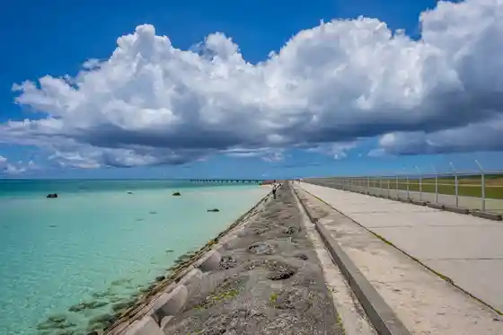
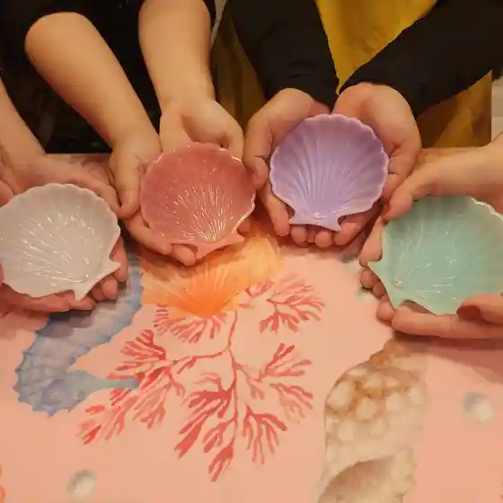
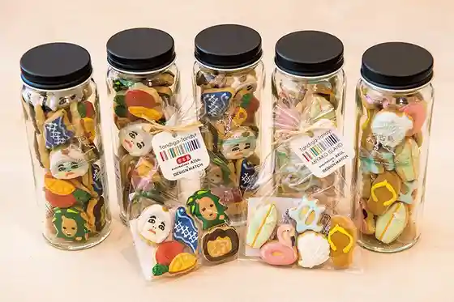
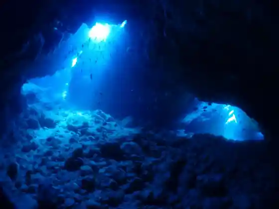

17END
Miyakojima, Okinawa · Official / source link

AngelPearl
Miyakojima, Okinawa · 090-3036-2525 · Official / source link

DESIGN MATCH
Miyakojima, Okinawa · 0980-79-0239 · Official / source link

DIVE KIDS
Miyakojima, Okinawa · 0980-72-7338 · Official / source link

SEA DANCER
Miyakojima, Okinawa · 0980-73-5882 · Official / source link
SKYWAVE
Miyakojima, Okinawa · 090-5613-0072 · Official / source link
SevenSeas Miyakojima
Miyakojima, Okinawa · 080-5659-4189 · Official / source link
Sevenseas Miyakojima
Miyakojima, Okinawa · 080-5659-4189 · Official / source link
mana Factory (Manafakutorii)
Miyakojima, Okinawa · 0980-73-4039(090-7062-9291) · Official / source link
Amai no Daisuki ! Farm
Miyakojima, Okinawa · Official / source link
Irabu Bridge Umi no Eki
Miyakojima, Okinawa · 0980-78-3778 · Official / source link
Ue no Doitsu Bunka Village
Miyakojima, Okinawa · 0980-76-3771 · Official / source link
Saruka Village
Miyakojima, Okinawa · 0980-77-7691 · Official / source link
Maipari Miyakojima Nettai Orchard
Miyakojima, Okinawa · 0980-74-7830 · Official / source link
Miyako Joba Kurabu
Miyakojima, Okinawa · 0980-77-8356 · Official / source link
Ai Land Wakusu
Miyakojima, Okinawa · Official / source link
Akuasuta Miyakojima
Miyakojima, Okinawa · 0980-79-5340 · Official / source link
Ingyamarin Garden
Miyakojima, Okinawa · Official / source link
Emerarudokosutogorufurinkusu
Miyakojima, Okinawa · 0980-76-3232(0980763030) · Official / source link
Orutanateibu Farm Miyako
Miyakojima, Okinawa · 090-7205-5199 · Official / source link
Oshanrinkusu Miyakojima
Miyakojima, Okinawa · 0980-77-8900 · Official / source link
Karakara Sensei no Daibingusukuru Miyakojima
Miyakojima, Okinawa · Official / source link
Gaido Ya San
Miyakojima, Okinawa · 0980-75-5880 · Official / source link
Kuriakayakku Tour
Miyakojima, Okinawa · 0980-79-7345(070-3800-0385) · Official / source link
Kuriakayakku &SUP
Miyakojima, Okinawa · 080-7333-7070 · Official / source link
Kuriakayakku & Shu no Ga Ringu Tour
Miyakojima, Okinawa · 0980-79-7345(070-3800-0385) · Official / source link
Kuriasappu Tour
Miyakojima, Okinawa · 0980-79-7345(070-3800-0385) · Official / source link
Kuriasappu & Shu no Ga Ringu Tour
Miyakojima, Okinawa · 0980-79-7345(070-3800-0385) · Official / source link
Sabautsuga (Shi Shitei Historic Site)
Miyakojima, Okinawa · Official / source link
Sama Resort Miyakojima
Miyakojima, Okinawa · 098-964-3802 · Official / source link
Sansettofoto Tour
Miyakojima, Okinawa · 0980-79-7345(070-3800-0385) · Official / source link
Shigira Beach
Miyakojima, Okinawa · 0980-74-7206 · Official / source link
Sumuryamyaka (Ken Shitei Historic Site)
Miyakojima, Okinawa · Official / source link
Daibingu Shoshinsha no Ho Daikangei ! Upuyu Marin Club
Miyakojima, Okinawa · 090-2580-0929 · Official / source link
Toribasansetto Beach
Miyakojima, Okinawa · 0980-72-4876 · Official / source link
Doitsu Kotei Hakuai Kinenhi
Miyakojima, Okinawa · Official / source link
Hamitto Club
Miyakojima, Okinawa · 080-6486-7019 · Official / source link
Painagama Beach
Miyakojima, Okinawa · 0980-72-4876 · Official / source link
Pacha Beach
Miyakojima, Okinawa · Official / source link
Beikuruzu Miyakojima Momburan
Miyakojima, Okinawa · 0980-72-6641 · Official / source link
Yogasutajio Kukuru
Miyakojima, Okinawa · Official / source link
Ippan Shadanhojin Miyakojima Tourism Association
Miyakojima, Okinawa · 0980-79-6611 · Official / source link
Ue Hi Yayama Iseki (Ken Shitei Historic Site)
Miyakojima, Okinawa · Official / source link
Shitaji Shima
Miyakojima, Okinawa · Official / source link
Shitaji Shima no Tori Ike
Miyakojima, Okinawa · Official / source link
Shitaji Town no Ikeda Ko (Ken Shitei Historic Site)
Miyakojima, Okinawa · Official / source link
Yonaha Maehama Beach
Miyakojima, Okinawa · 0980-73-2690 · Official / source link
Hisamatsu Go Yushi no Kensho Hi
Miyakojima, Okinawa · Official / source link
Jintozei Ishi
Miyakojima, Okinawa · Official / source link
Nakasone Yutaka Ken Oya no Haka (Kuni Shitei Juyo Bunkazai)
Miyakojima, Okinawa · Official / source link
Nakazato Nettai Orchard
Miyakojima, Okinawa · 0980-76-6443 · Official / source link
Irabe Bridge
Miyakojima, Okinawa · Official / source link
Irabe Shima Marinzupuro Miyako
Miyakojima, Okinawa · 0980-78-5855 · Official / source link
Sawata no Hama
Miyakojima, Okinawa · 0980-73-2690 · Official / source link
Yabiji
Miyakojima, Okinawa · Official / source link
Yabiji Shu no Ga Ringu Tour
Miyakojima, Okinawa · 0980-79-7345(070-3800-0385) · Official / source link
Yabiji Senmon Karutomariinu
Miyakojima, Okinawa · 090-4708-9575 · Official / source link
Hakuai Waiwai Beach
Miyakojima, Okinawa · 0980-72-2365 · Official / source link
Yoshino Coast
Miyakojima, Okinawa · 090-8763-8903 · Official / source link
Ki Sa Makoto Ontake (Ken Shitei Yukei Minzoku Bunkazai)
Miyakojima, Okinawa · Official / source link
Miyakojima no Daibingu Center (Irabe Shima Marin Center)
Miyakojima, Okinawa · 0980-78-4178 · Official / source link
Miyakojima Sasuteinaburutsurizumu Renrakukai
Miyakojima, Okinawa · Official / source link
Miyakojima Daibingu Kapirina
Miyakojima, Okinawa · 080-9243-3505 · Official / source link
Miyakojima Daibingu / Eminamarin
Miyakojima, Okinawa · 0980-79-5131 · Official / source link
Miyakojima Paraseringushoppuparadaisu
Miyakojima, Okinawa · 070-5410-9555 · Official / source link
Miyakojima Buruforesuto Umi Maru
Miyakojima, Okinawa · 080-4673-0385 · Official / source link
Miyakojima Yabiji Tour Senmon Akuabesu
Miyakojima, Okinawa · 0980-75-2377(098-923-2862) · Official / source link
Miyakojima Dentokogei Hin Center
Miyakojima, Okinawa · 0980-74-7480 · Official / source link
Miyakojima Kosetsu Market
Miyakojima, Okinawa · 0980-73-2690 · Official / source link
Miyakojima Kaichu Park
Miyakojima, Okinawa · 0980-74-6335 · Official / source link
Miyakojima Kaiho Kan
Miyakojima, Okinawa · 0980-77-2323 · Official / source link
Shima no Eki Miyako
Miyakojima, Okinawa · 0980-79-5151 · Official / source link
Shima no Eki Miyako Kuko Mise
Miyakojima, Okinawa · 070-5488-2699 · Official / source link
Shima Kaiku (Sumankaiku)
Miyakojima, Okinawa · 0980-78-5401 · Official / source link
Tezu Kuri Toki Arara Kama
Miyakojima, Okinawa · 090-4646-3311 · Official / source link
Shinjo Coast
Miyakojima, Okinawa · 0980-73-2690 · Official / source link
Kurima Bridge
Miyakojima, Okinawa · Official / source link
Kurima Shima
Miyakojima, Okinawa · Official / source link
Higashihenna Saki
Miyakojima, Okinawa · Official / source link
Matsugahara Gorufu Club
Miyakojima, Okinawa · 0980-73-6011 · Official / source link
Ikema Bridge
Miyakojima, Okinawa · Official / source link
Ikema Shima Kaitei Kanko
Miyakojima, Okinawa · 0980-75-2871(090-3797-9494) · Official / source link
Awamori no Kuramoto Tara Kawa
Miyakojima, Okinawa · 0980-77-4108 · Official / source link
Ama Workshop Miyako Mise
Miyakojima, Okinawa · 0980-75-0788 · Official / source link
Toguchi no Hama
Miyakojima, Okinawa · 0980-73-2690 · Official / source link
Cho Mizu Ontake
Miyakojima, Okinawa · Official / source link
Makiyama Lookout
Miyakojima, Okinawa · Official / source link
Ryukyu Garasu Senmonten NBLAST (Enuburasuto)
Miyakojima, Okinawa · 0980-79-9922 · Official / source link
Ryukyu Marushie
Miyakojima, Okinawa · 050-5864-0642 · Official / source link
Chi Kazusa Yoshitoyo Ken Oya no Haka (Kuni Shitei Juyo Bunkazai)
Miyakojima, Okinawa · Official / source link
Sunayama Beach
Miyakojima, Okinawa · 0980-73-2690 · Official / source link
Tourist Farm Yutopia Farm Miyakojima
Miyakojima, Okinawa · 0980-76-2949 · Official / source link
Nohara Gaku no Rei Ishi (Ken Shitei Historic Site)
Miyakojima, Okinawa · Official / source link
Kinjo Togei
Miyakojima, Okinawa · 0980-76-6694 · Official / source link
Yukishio Museum
Miyakojima, Okinawa · 0980-72-5667 · Official / source link
Shuri Sekken San'e Miyakojima Shiteigyarariishoppu
Miyakojima, Okinawa · 0800-000-3777 · Official / source link
Men to Zakka Tokaki Kori
Miyakojima, Okinawa · 070-8521-8961 · Official / source link